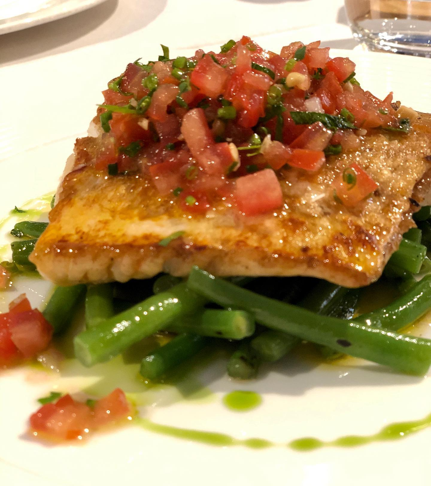

Rajčinový šalát podľa @dusandivko — Normy Jedál
Ľúbim rybičky. Dnes to bol #candat s fazuľkovými lúskami a rajčinovým šalátom v reštaurácii @nextdoor_praha
.
.
#rybka #candat #fazulovelusky #rajcinovysalat #vecera #nextdoorbyimperial #praha🇨🇿